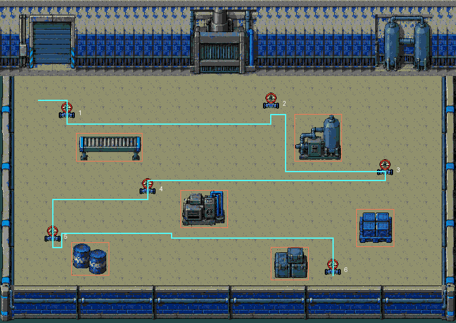

Fase 11 · Reativar a fábrica
O mesmo interior da fase 10, agora com seis válvulas distribuídas entre as máquinas e a carga. Damião precisa circular pela fábrica para ligá-la e atrair os insetos, abrindo caminho até o estaleiro.
Acesso no jogo: FASE TESTE → Campanha → 11. Revisão integrada localmente.
Mundo: 768×544 pxCampo vertical: 352 pxVálvulas: 6Inimigos simultâneos: 5Uso da reserva: 389/640 tiles
Composição completa

O fundo e os seis grupos de props mantêm a composição da fase 10. A fase 11 troca apenas os quatro tons quentes da paleta por azuis. A ROM compartilha os mesmos tiles e mapa; a fase 10 mantém suas cores originais. Os ovos não reaparecem nesta etapa.
Percurso entre os equipamentos

As válvulas ocupam as partes superior, central e inferior. O trajeto em ciano é uma sugestão de aproximadamente 1.992 px, não uma ordem obrigatória. Todas as 3.277 posições livres da malha são conectadas; as seis aproximações foram percorridas com o controle.
Mais pressão durante a operação
| Configuração | Antes | Agora |
|---|
| Válvulas | 3 | 6 espalhadas |
| Limite de inimigos | 3 | 5 |
| Intervalo dos reforços | 3 s | 2 s |
| Trabalho por válvula | 1,5 s | 2,5 s de simulação |
Aproxime-se e solte A para operar. A barra mostra o avanço; atirar interrompe o trabalho, e recuar preserva o progresso para voltar depois. Cada válvula aberta ganha um indicador de energia, e o HUD conta até 6/6.
Capturas na ROM
 Entrada · 0/6 válvulas
Entrada · 0/6 válvulas Barra de operação sobre a válvula
Barra de operação sobre a válvula Primeira válvula aberta · 1/6
Primeira válvula aberta · 1/6 Setor inferior e obstáculos
Setor inferior e obstáculos Cinco inimigos com IA e projéteis
Cinco inimigos com IA e projéteis Seis válvulas abertas · objetivo concluído
Seis válvulas abertas · objetivo concluídoPassaram em NTSC/PAL: seis operações por controle, sexta válvula como primeira interação, barra avançando, disparo interrompendo a operação, preservação após recuo/pausa, pixels exatos em 36 câmeras, contatos e limites. O teste funcional isola os inimigos antes do percurso; a execução usa controles sem escrever progresso. A paleta azul também foi verificada na CRAM do emulador. Os tiles, mapa e paleta originais da fase 10 foram conferidos na ROM. As regressões das fases 9 e 10 são da revisão anterior, com a mesma lógica de jogo.
Carga e memória
Carga de cinco inimigos com IA ativa e 6+6 tiros durante 20 segundos em cada setor. Vida protegida e reposição apenas dos tiros inativos. Há queda de desempenho no centro:
| Setor | NTSC · FPS | PAL · FPS |
|---|
| Setor superior | 58.55 | 50.00 |
| Máquinas centrais | 48.50 | 49.85 |
| Setor inferior | 60.00 | 50.00 |
Combate natural de 30 s sem concessões: 59,267 FPS em NTSC e 50 FPS em PAL. A amostra não certifica dificuldade humana; hardware físico não testado.
Cache de 320 tiles + 65 tiles para todos os quadros das válvulas + 4 para a barra = 389 tiles usados, 12.448 bytes dentro da reserva de 640. Heap do cache: 4.854 bytes. Tiles e mapa compartilhados: 1.147 padrões exatos, 36.704 bytes de gráficos e mapa de 13.056 bytes. Nenhuma substituição aproximada de tiles.
ROM local: f4f7b96e2b2e9c9445f6e01961a7ae053ed21c35f60fef41346bb4f0a7794b21. GitHub permanece na publicação anterior das fases 6–9.